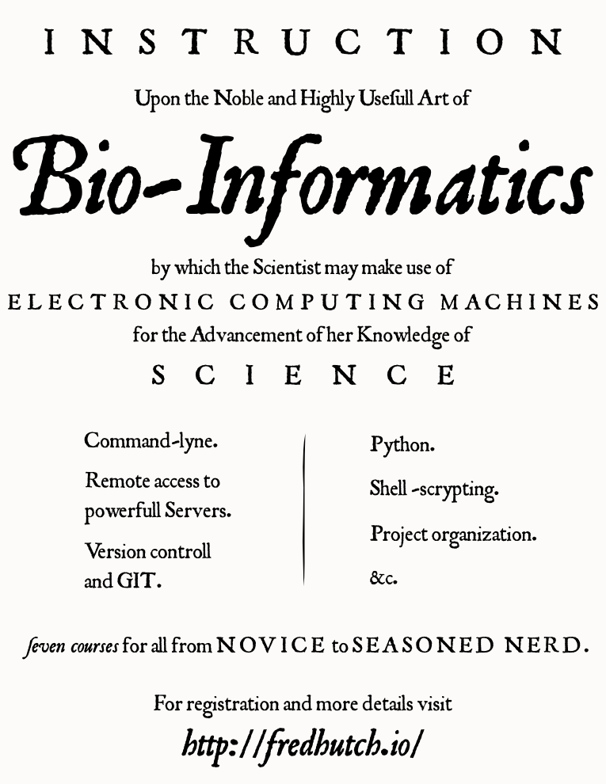

Talks by Christopher Small & Frederick A. Matsen IV is licensed under a Creative Commons Attribution-NonCommercial-ShareAlike 3.0 Unported License.

A short series offered by fredhutch.io to members of Fred Hutch.
The following is the tentative outline for courses in the class:
The class will be loosely following Bioinformatics Data Skills for the overview, unix, and version control sections. For the python sections, we'll be following [TBD].
The links in the outline above will eventually point to the slides and resources for the respective sessions.
For the first class, please install NoMachine on the laptop you plan to bring to class. We also ask that you read the first two chapters of the book (particularly the first) before coming to class, but you won't be chastised if you don't.
After the first class, if you have a Linux or OSX machine and wish to avoid using NoMachine, you can do so as long as you have sshfs installed on your computer. For Ubuntu users, all you have to do is run sudo apt-get install sshfs in a terminal For OSX users, you have to
brew install sshfs from your OSX terminalYou should now be able to run
mkdir -p ~/mounts/hutch
sshfs rhino: ~/mounts/hutchNow you can access files in your home directory on the servers as though they lived in ~/mounts/hutch on your laptop. In particular, you can now use your text editor of choice to edit code files for the remainder of this class. (We recommend Sublime Text, but if you're on Ubuntu you can probably get by with Gedit).
Sorry, running directly from Windows is not supported. You can always install Virtual Box, and an Ubuntu virtual machine if you really want to run things on your own laptop, and in particular if you're interested in having your own Linux environment to play with.
The slides are written in a little extension of Markdown. After processing, the Markdown gets converted to a reveal.js presentation. HTML is rendered by the brilliant pandoc. Trees are rendered using the archaeopteryx tree viewer.
Talks by Christopher Small & Frederick A. Matsen IV is licensed under a Creative Commons Attribution-NonCommercial-ShareAlike 3.0 Unported License.